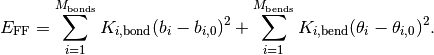
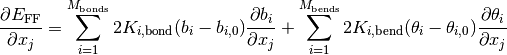
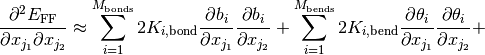
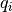
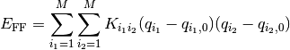
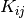
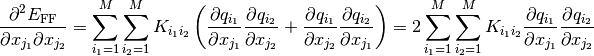
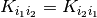
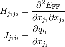
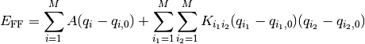

Internal coordinates¶
Introduction¶
Internal coordinates are often used to characterize molecular geometries and for the definition of energy terms in valence force-field models. In general an internal coordinate can be defined as any function of the Cartesian atomic coordinates that does not depend on global rotation and translation.
The module molmod.ic contains functions for the internal coordinates listed in the table below.
| Name | Number of arguments | Description |
|---|---|---|
| bond_length | 2 | Distance between two atoms |
| pair_distance | 2 | (idem) |
| bend_cos | 3 | The cosine of a bending angle |
| bend_angle | 4 | The bending angle |
| dihed_cos | 4 | The cosine of a dihedral angle |
| dihed_angle | 4 | The dihedral angle, following IUPAC standard for the sign |
| opbend_angle | 4 | The out of plane bending angle |
In addition to the value of the internal coordinate, it can also compute the first and second order derivatives of the internal coordinate towards the Cartesian coordinates. Each internal coordinate function follows the same API style, i.e.
def some_ic(v1, v2, ..., deriv=0):
...
All mandatory arguments are 3-element numpy arrays with the atomic coordinates that define the internal coordinate. The last and optional argument determines which derivatives are computed. By default no derivatives are computed, and the internal coordinate is returned in a singleton tuple. When deriv==1 the internal coordinate and the gradient are returned in a tuple. When deriv==2 the internal coordinate, the gradient and the Hessian are returned in a tuple.
The implementation is based on a generic schemes that takes care of following the chain rule for the derivatives, which makes it rather easy to extend this module with new types of internal coordinates.
The examples and problems below use a propane and dopamine geometry. The latter is optimized at the B3LYP/6-31G(d) level, followed by a frequency computation. The computations are carried out with Gaussian03. The formatted checkpoint file of the frequency job is stripped to include only the section used in this chapter.
Examples¶
A simple bond length¶
This is just a simple example...
File: examples/003_internal_coordinates/a_bond_length.py
1 2 3 4 5 6 7 8 9 10 11 12 13 14 15 16 17 18 19 20 21 22 23 24 25 26 27 28 29 30 31 32 33 34 35 | #!/usr/bin/env python
# -*- coding: utf-8 -*-
# MolMod is a collection of molecular modelling tools for python.
# Copyright (C) 2007 - 2012 Toon Verstraelen <Toon.Verstraelen@UGent.be>, Center
# for Molecular Modeling (CMM), Ghent University, Ghent, Belgium; all rights
# reserved unless otherwise stated.
#
# This file is part of MolMod.
#
# MolMod is free software; you can redistribute it and/or
# modify it under the terms of the GNU General Public License
# as published by the Free Software Foundation; either version 3
# of the License, or (at your option) any later version.
#
# MolMod is distributed in the hope that it will be useful,
# but WITHOUT ANY WARRANTY; without even the implied warranty of
# MERCHANTABILITY or FITNESS FOR A PARTICULAR PURPOSE. See the
# GNU General Public License for more details.
#
# You should have received a copy of the GNU General Public License
# along with this program; if not, see <http://www.gnu.org/licenses/>
#
#--
#!/usr/bin/env python
from molmod import *
# 0) Load the molecule
mol = Molecule.from_file("dopamine.xyz")
# 1) Compute the length of the hydrogen bond.
# (Atoms 1 and 20 form a hydrogen bond.)
d = bond_length(mol.coordinates[[1, 20]])[0]
# The return value of bond_length is a singleton by default. The final
# part `[0]` takes the first value of this singleton.
print "Hydrogen bond length [Angstrom] =", d/angstrom
|
All bending angles in dopamine¶
We use the graph features to detect all bending angles in the dopamine molecule. An overview is printed including the atomic indexes and elements involved in each angle.
File: examples/003_internal_coordinates/b_bending_angles.py
1 2 3 4 5 6 7 8 9 10 11 12 13 14 15 16 17 18 19 20 21 22 23 24 25 26 27 28 29 30 31 32 33 34 35 36 37 38 39 40 41 42 43 44 45 46 47 48 49 50 51 52 53 54 55 | #!/usr/bin/env python
# -*- coding: utf-8 -*-
# MolMod is a collection of molecular modelling tools for python.
# Copyright (C) 2007 - 2012 Toon Verstraelen <Toon.Verstraelen@UGent.be>, Center
# for Molecular Modeling (CMM), Ghent University, Ghent, Belgium; all rights
# reserved unless otherwise stated.
#
# This file is part of MolMod.
#
# MolMod is free software; you can redistribute it and/or
# modify it under the terms of the GNU General Public License
# as published by the Free Software Foundation; either version 3
# of the License, or (at your option) any later version.
#
# MolMod is distributed in the hope that it will be useful,
# but WITHOUT ANY WARRANTY; without even the implied warranty of
# MERCHANTABILITY or FITNESS FOR A PARTICULAR PURPOSE. See the
# GNU General Public License for more details.
#
# You should have received a copy of the GNU General Public License
# along with this program; if not, see <http://www.gnu.org/licenses/>
#
#--
#!/usr/bin/env python
from molmod import *
# 0) Load the molecule and set the default graph
mol = Molecule.from_file("dopamine.xyz")
mol.set_default_graph()
# 1) Build a list of atom indexes involved in angles.
angles = []
# First loop over all atoms on the molecule.
for i1 in xrange(mol.size):
# For each atom we will find all bending angles centered at the current
# atom. For this we construct (an ordered!) list of all bonded neighbors.
n = list(mol.graph.neighbors[i1])
# The second loop iterates over all neighbors. The enumerate function is
# used to assign a counter value to the variable index.
for index, i0 in enumerate(n):
# The third loop iterates over all other neighbors that came before i1.
for i2 in n[:index]:
# Each triple is stored as an item in the list angles.
angles.append((i0, i1, i2))
# 2) Iterate over all angles, compute and print.
print "An overview of all bending angles in dopamine:"
for i0, i1, i2 in angles:
# Notice again the [0] at the end.
angle = bend_angle(mol.coordinates[[i0, i1, i2]])[0]
# Python formatting of the indexes, symbols, and the angle in degrees.
print "%2i %2i %2i %2s %2s %2s %5.1f" % (
i0, i1, i2, mol.symbols[i0], mol.symbols[i1], mol.symbols[i2], angle/deg
)
|
Simple Force-field Hessian¶
In this example we do a simple computation of a force-field Hessian for the propane molecule. The force-field in this example model has only bond-stretch and bending angle terms. We further assume that all internal coordinates are at the rest-value of the corresponding energy term in the force field. This facilitates the program as we only have to take into account the force constants of the energy terms.
The mathematical form of the FF model is:

The Cartesian gradient of the force-field energy becomes:

The Cartesian Hessian of the force-field becomes:
![\frac{\partial^2 E_{\text{FF}}}{\partial x_{j_1} \partial x_{j_2}} =
\sum_{i=1}^{M_\text{bonds}} 2 K_{i,\text{bond}} \left[
\frac{\partial b_i}{\partial x_{j_1}} \frac{\partial b_i}{\partial x_{j_2}} +
(b_i - b_{i,0}) \frac{\partial^2 b}{\partial x_{j_1} \partial x_{j_2}}
\right] +
\sum_{i=1}^{M_\text{bends}} 2 K_{i,\text{bend}} \left[
\frac{\partial \theta_i}{\partial x_{j_1}} \frac{\partial \theta_i}{\partial x_{j_2}} +
(\theta_i - \theta_{i,0}) \frac{\partial^2 \theta_i}{\partial x_{j_1} \partial x_{j_2}} +
\right]](../_images/math/10b2b4a225812dfd8102b6fce88b77ddfe6c3600.png)
For the sake of a simple example, we assume that all bond lengths and valence angles are at their optimum such that the second derivatives of the internal coordinates towards the Cartesian coordinates drop out of the expression for the Hessian:

We use the following force constants.
| Energy term | Force constant | Unit |
|---|---|---|
| CH bond | 310 | k cal mol-1 Å-2 |
| CC bond | 220 | k cal mol-1 Å-2 |
| HCH bend | 35 | k cal mol-1 rad-2 |
| HCC bend | 30 | k cal mol-1 rad-2 |
| CCC bend | 60 | k cal mol-1 rad-2 |
The program below uses an object-oriented approach to implement the force-field model. Each energy term is conceived as an object of either the BondStretchTerm or the BendingAngleTerm class. They both derive from the HarmonicEnergyTerm class where all the Hessian logic is implemented. Each term object contains attributes for the force-field parameters and the atom indexes that are involved in the internal coordinate. The term objects are kept in a list in the ForceField class that has a method to compute the Hessian for a given geometry.
File: examples/003_internal_coordinates/c_ff_hessian.py
1 2 3 4 5 6 7 8 9 10 11 12 13 14 15 16 17 18 19 20 21 22 23 24 25 26 27 28 29 30 31 32 33 34 35 36 37 38 39 40 41 42 43 44 45 46 47 48 49 50 51 52 53 54 55 56 57 58 59 60 61 62 63 64 65 66 67 68 69 70 71 72 73 74 75 76 77 78 79 80 81 82 83 84 85 86 87 88 89 90 91 92 93 94 95 96 97 98 99 100 101 102 103 104 105 106 107 108 109 110 111 112 113 114 115 116 117 118 119 120 121 122 123 124 125 126 127 128 129 130 131 132 133 134 135 136 137 138 139 140 141 142 143 144 145 146 147 148 149 150 151 152 153 154 155 156 157 158 159 160 161 162 163 164 165 166 167 168 169 170 171 172 173 174 175 176 177 178 | #!/usr/bin/env python
# -*- coding: utf-8 -*-
# MolMod is a collection of molecular modelling tools for python.
# Copyright (C) 2007 - 2012 Toon Verstraelen <Toon.Verstraelen@UGent.be>, Center
# for Molecular Modeling (CMM), Ghent University, Ghent, Belgium; all rights
# reserved unless otherwise stated.
#
# This file is part of MolMod.
#
# MolMod is free software; you can redistribute it and/or
# modify it under the terms of the GNU General Public License
# as published by the Free Software Foundation; either version 3
# of the License, or (at your option) any later version.
#
# MolMod is distributed in the hope that it will be useful,
# but WITHOUT ANY WARRANTY; without even the implied warranty of
# MERCHANTABILITY or FITNESS FOR A PARTICULAR PURPOSE. See the
# GNU General Public License for more details.
#
# You should have received a copy of the GNU General Public License
# along with this program; if not, see <http://www.gnu.org/licenses/>
#
#--
#!/usr/bin/env python
import numpy
from molmod import *
class HarmonicEnergyTerm(object):
"""Base class for all energy terms."""
def __init__(self, force_constant, indexes, icfn):
"""
Arguments:
| ``force_constant`` -- The force constant in atomic units.
| ``indexes`` -- The indexes of the atoms in the internal
coordinate. The order must be the same as the order
of the mandatory arguments of icfn.
| ``icfn`` -- a function from molmod.ic that can compute the
internal coordinate and its derivatives.
"""
self.force_constant = force_constant
self.indexes = indexes
self.icfn = icfn
def add_to_hessian(self, coordinates, hessian):
"""Add the contributions of this energy term to the Hessian
Arguments:
| ``coordinates`` -- A numpy array with 3N Cartesian coordinates.
| ``hessian`` -- A matrix for the full Hessian to which this energy
term has to add its contribution.
"""
# Compute the derivatives of the bond stretch towards the two cartesian
# coordinates. The bond length is computed too, but not used.
q, g = self.icfn(coordinates[list(self.indexes)], 1)
# Add the contribution to the Hessian (an outer product)
for ja, ia in enumerate(self.indexes):
# ja is 0, 1, 2, ...
# ia is i0, i1, i2, ...
for jb, ib in enumerate(self.indexes):
contrib = 2*self.force_constant*numpy.outer(g[ja], g[jb])
hessian[3*ia:3*ia+3, 3*ib:3*ib+3] += contrib
class BondStretchTerm(HarmonicEnergyTerm):
"""A single bond-stretch energy term in the force-field term."""
def __init__(self, force_constant, i0, i1):
"""
Arguments:
| ``force_constant`` -- The force constant in atomic units.
| ``i0`` -- The atom index of the first atom in the bond.
| ``i1`` -- The atom index of the second atom in the bond.
"""
HarmonicEnergyTerm.__init__(self, force_constant, (i0, i1), bond_length)
class BendAngleTerm(HarmonicEnergyTerm):
"""A single bond-stretch energy term in the force-field term."""
def __init__(self, force_constant, i0, i1, i2):
"""
Arguments:
| ``force_constant`` -- The force constant in atomic units.
| ``i0`` -- The atom index of the first atom in the angle.
| ``i1`` -- The atom index of the central atom in the angle.
| ``i2`` -- The atom index of the third atom in the angle.
"""
HarmonicEnergyTerm.__init__(self, force_constant, (i0, i1, i2), bend_angle)
class ForceField(object):
"""A container object for all force field terms."""
def __init__(self, terms):
"""
Argument:
| ``terms`` -- a list of force-field terms
"""
self.terms = terms
# just print out the energy terms
for term in self.terms:
print "Energy term", term.icfn, term.force_constant, term.indexes
def hessian(self, coordinates):
"""Compute the force-field Hessian for the given coordinates.
Argument:
| ``coordinates`` -- A numpy array with the Cartesian atom
coordinates, with shape (N,3).
Returns:
| ``hessian`` -- A numpy array with the Hessian, with shape (3*N,
3*N).
"""
# N3 is 3 times the number of atoms.
N3 = coordinates.size
# Start with a zero hessian.
hessian = numpy.zeros((N3,N3), float)
# Add the contribution of each term.
for term in self.terms:
term.add_to_hessian(coordinates, hessian)
return hessian
def setup_hydrocarbon_ff(graph):
"""Create a simple ForceField object for hydrocarbons based on the graph."""
# A) Define parameters.
# the bond parameters:
bond_params = {
(6, 1): 310*kcalmol/angstrom**2,
(6, 6): 220*kcalmol/angstrom**2,
}
# for every (a, b), also add (b, a)
for key, val in bond_params.items():
if key[0] != key[1]:
bond_params[(key[1], key[0])] = val
# the bend parameters
bend_params = {
(1, 6, 1): 35*kcalmol/rad**2,
(1, 6, 6): 30*kcalmol/rad**2,
(6, 6, 6): 60*kcalmol/rad**2,
}
# for every (a, b, c), also add (c, b, a)
for key, val in bend_params.items():
if key[0] != key[2]:
bend_params[(key[2], key[1], key[0])] = val
# B) detect all internal coordinates and corresponding energy terms.
terms = []
# bonds
for i0, i1 in graph.edges:
K = bond_params[(graph.numbers[i0], graph.numbers[i1])]
terms.append(BondStretchTerm(K, i0, i1))
# bends (see b_bending_angles.py for the explanation)
for i1 in xrange(graph.num_vertices):
n = list(graph.neighbors[i1])
for index, i0 in enumerate(n):
for i2 in n[:index]:
K = bend_params[(graph.numbers[i0], graph.numbers[i1], graph.numbers[i2])]
terms.append(BendAngleTerm(K, i0, i1, i2))
# C) Create and return the force field
return ForceField(terms)
# This if block is only executed when this file is ran as a program, and not
# when it is loaded as a module.
if __name__ == "__main__":
propane = Molecule.from_file("propane.xyz")
propane.set_default_graph()
ff = setup_hydrocarbon_ff(propane.graph)
hessian = ff.hessian(propane.coordinates)
print "The Hessian in kcal/mol/angstrom**2"
unit = kcalmol/angstrom**2
for row in hessian:
print " ".join("% 5.0f" % (v/unit) for v in row)
|
DFT Hessian in internal coordinates – Stationary geometries¶
Given a DFT Hessian for a stationary molecular system, and a list of internal coordinates, , one may construct a model for the Hessian based on a complete second order expansion in terms of internal coordinates. This means that one uses a force-field model with all possible cross terms as follows:

One can define internal force constants,  such that the
force-field Hessian coincides with a given Hessian from a DFT computation. One
could call the matrix  the Hessian in internal coordinates, but as
we will see below, this not a very strict definition. The purpose of such a
transformation is that the matrix is (or can be made) more diagonally
dominant than the original Hessian. It is a tool to get insight in the
contributions to the Hessian that one should include in a force-field model.
Similar models are used in redundant optimization methods.
the Hessian in internal coordinates, but as
we will see below, this not a very strict definition. The purpose of such a
transformation is that the matrix is (or can be made) more diagonally
dominant than the original Hessian. It is a tool to get insight in the
contributions to the Hessian that one should include in a force-field model.
Similar models are used in redundant optimization methods.
Assuming that the geometry is at a stationary point of the potential energy surface, one has to following expression for the force-field Hessian:

The last step assumes that . This can be rewritten in matrix notation:
(1)
with

In practice, the Jacobian matrix  is rectangular, mainly because there
are often much more internal coordinates than Cartesian coordinates. Therefore
one can not simply invert (1) to obtain the Hessian in
internal coordinates. There are actually many matrices that solve
equation (1), and one has to introduce some additional
criteria to fix .
is rectangular, mainly because there
are often much more internal coordinates than Cartesian coordinates. Therefore
one can not simply invert (1) to obtain the Hessian in
internal coordinates. There are actually many matrices that solve
equation (1), and one has to introduce some additional
criteria to fix .
For the sake of simplicity, we will use the Moore-Penrose pseudoinverse of the Jacobian to invert (1), but there may be better choices. This may seem a unique choice, but in practice it is not. The problem is that the columns of the Jacobian can have different units. Therefore the numerical Jacobian and its pseudoinverse depend on the choice of the units. Again, we make a simple choice here to solve this issue: all columns where the internal coordinates are some sort of distance, are kept as is. All angles are converted to a length unit with a fixed conversion factor: c = 1Å / 5°. Again, there may be better choices, e.g. one may normalize the columns of the Jacobian.
The program below performs such an inversion on a DFT Hessian of the for the dopamine molecule, using all bond lengths, bending angles and dihedral angles. The script is written in an object-oriented style: each internal coordinate is an object of the class BondLength, BendingAngle or DihdralAngle. These three classes are derived from InternalCoordinates and share a common API such that the main program does not have to worry about the nature of the internal coordinates.
The Hessian is computed with a Gaussian03 B3LYP/6-31G(d) frequency job. The result is stored in the file dopamine.fchk, which is a stripped version of the file generated by the fromchk program that is part of Gaussian03.
File: examples/003_internal_coordinates/d_dft_hessian.py
1 2 3 4 5 6 7 8 9 10 11 12 13 14 15 16 17 18 19 20 21 22 23 24 25 26 27 28 29 30 31 32 33 34 35 36 37 38 39 40 41 42 43 44 45 46 47 48 49 50 51 52 53 54 55 56 57 58 59 60 61 62 63 64 65 66 67 68 69 70 71 72 73 74 75 76 77 78 79 80 81 82 83 84 85 86 87 88 89 90 91 92 93 94 95 96 97 98 99 100 101 102 103 104 105 106 107 108 109 110 111 112 113 114 115 116 117 118 119 120 121 122 123 124 125 126 127 128 129 130 131 132 133 134 135 136 137 138 139 140 141 142 143 144 145 146 147 148 149 150 151 152 153 154 155 156 157 158 159 160 161 | #!/usr/bin/env python
# -*- coding: utf-8 -*-
# MolMod is a collection of molecular modelling tools for python.
# Copyright (C) 2007 - 2012 Toon Verstraelen <Toon.Verstraelen@UGent.be>, Center
# for Molecular Modeling (CMM), Ghent University, Ghent, Belgium; all rights
# reserved unless otherwise stated.
#
# This file is part of MolMod.
#
# MolMod is free software; you can redistribute it and/or
# modify it under the terms of the GNU General Public License
# as published by the Free Software Foundation; either version 3
# of the License, or (at your option) any later version.
#
# MolMod is distributed in the hope that it will be useful,
# but WITHOUT ANY WARRANTY; without even the implied warranty of
# MERCHANTABILITY or FITNESS FOR A PARTICULAR PURPOSE. See the
# GNU General Public License for more details.
#
# You should have received a copy of the GNU General Public License
# along with this program; if not, see <http://www.gnu.org/licenses/>
#
#--
#!/usr/bin/env python
import numpy
from molmod import *
from molmod.io import FCHKFile
class InternalCoordinate(object):
"""Abstract base class for all internal coordinates."""
def __init__(self, indexes, icfn, conversion=1.0):
"""
Arguments:
| ``indexes`` -- The indexes of the atoms in the internal
coordinate. The order must be the same as the order
of the mandatory arguments of icfn.
| ``icfn`` -- a function from molmod.ic that can compute the
internal coordinate and its derivatives.
| ``conversion`` -- In case the internal coordinate does not have a
unit of length, then this conversion factor is
used to convert it to a length unit. This way,
the Jacobian becomes a dimensionless constant.
All the Jacobian-logic is implemented in this abstract class.
"""
self.indexes = indexes
self.icfn = icfn
self.conversion = conversion
def fill_jacobian_column(self, jaccol, coordinates):
"""Fill in a column of the Jacobian.
Arguments:
| ``jaccol`` -- The column of Jacobian to which the result must be
added.
| ``coordinates`` -- A numpy array with Cartesian coordinates,
shape=(N,3)
"""
q, g = self.icfn(coordinates[list(self.indexes)], 1)
for i, j in enumerate(self.indexes):
jaccol[3*j:3*j+3] += g[i]
return jaccol
class BondLength(InternalCoordinate):
def __init__(self, i0, i1):
InternalCoordinate.__init__(self, (i0, i1), bond_length)
class BendingAngle(InternalCoordinate):
def __init__(self, i0, i1, i2):
InternalCoordinate.__init__(self, (i0, i1, i2), bend_angle, angstrom/(5*deg))
class DihedralAngle(InternalCoordinate):
def __init__(self, i0, i1, i2, i3):
InternalCoordinate.__init__(self, (i0, i1, i2, i3), dihed_angle, angstrom/(5*deg))
def setup_ics(graph):
"""Make a list of internal coordinates based on the graph
Argument:
| ``graph`` -- A Graph instance.
The list of internal coordinates will include all bond lengths, all
bending angles, and all dihedral angles.
"""
ics = []
# A) Collect all bonds.
for i0, i1 in graph.edges:
ics.append(BondLength(i0, i1))
# B) Collect all bends. (see b_bending_angles.py for the explanation)
for i1 in xrange(graph.num_vertices):
n = list(graph.neighbors[i1])
for index, i0 in enumerate(n):
for i2 in n[:index]:
ics.append(BendingAngle(i0, i1, i2))
# C) Collect all dihedrals.
for i1, i2 in graph.edges:
for i0 in graph.neighbors[i1]:
if i0==i2:
# All four indexes must be different.
continue
for i3 in graph.neighbors[i2]:
if i3==i1 or i3==i0:
# All four indexes must be different.
continue
ics.append(DihedralAngle(i0, i1, i2, i3))
return ics
def compute_jacobian(ics, coordinates):
"""Construct a Jacobian for the given internal and Cartesian coordinates
Arguments:
| ``ics`` -- A list of internal coordinate objects.
| ``coordinates`` -- A numpy array with Cartesian coordinates,
shape=(N,3)
The return value will be a numpy array with the Jacobian matrix. There
will be a column for each internal coordinate, and a row for each
Cartesian coordinate (3*N rows).
"""
N3 = coordinates.size
jacobian = numpy.zeros((N3, len(ics)), float)
for j, ic in enumerate(ics):
# Let the ic object fill in each column of the Jacobian.
ic.fill_jacobian_column(jacobian[:,j], coordinates)
return jacobian
# This if block is only executed when this file is ran as a program, and not
# when it is loaded as a module.
if __name__ == "__main__":
# Load the formatted checkpoint file with the frequency computation. This
# file also contains the atomic numbers and the coordinates of the atoms,
# and therefore one can access the dopamine molecule object through
# fchk.molecule.
fchk = FCHKFile("dopamine.fchk")
# Set the default graph for the construction of the internal coordinates:
fchk.molecule.set_default_graph()
# Setup a list of internal coordinates
ics = setup_ics(fchk.molecule.graph)
# Compute the Jacobian.
J = compute_jacobian(ics, fchk.molecule.coordinates)
# Compute the pseudo-inverse, using a loose threshold for the singular
# values to filter out equivalent internal coordinates.
Jinv = numpy.linalg.pinv(J, 1e-5)
# Get the Hessian in Cartesian coordinates.
H = fchk.get_hessian()
# Transform to internal coordinates.
K = numpy.dot(Jinv, numpy.dot(H, Jinv.transpose()))
# Make a nice printout of K.
print "The Hessian in internal coordinates in kcal/mol/angstrom**2"
unit = kcalmol/angstrom**2
for row in K:
print " ".join("% 5.0f" % (v/unit) for v in row)
|
For the computation of the pseudo-inverse, there is one more gotcha’s: some internal coordinates are exactly redundant, i.e. in the case of dopamine, the the dihedral angles in the aromatic ring are a bit problematic. It is comparable to the situation of ethene, where one dihdral angle can always be written as a simple linear function of the three other ones. The columns in the Jacobian corresponding to these dihedrals are linearly dependent. One can in principle leave out 6 columns in the case of dopamine. However, any selection of internal coordinates to be removed would be a subjective choice. One can avoid such subjective input by dropping the almost-zero singular values during he computation of the generalized inverse. Therefore the second argument to pinv in the script is set to 1e-5, which means that all singular values that are 100000 times smaller than the largest one, are treated as if they were zeros.
Problems¶
All bond CH-bond lengths in propane¶
Write a program that computes all CH-bond lengths in the propane molecule. Use the same style as in the example that computes the bending angles in the dopamine molecule.
More complete Force-field Hessian¶
Modify the program that computes the Hessian of propane in such a way that it takes into account the contributions due to deviations of internal coordinates from the rest value of each force-field term.
DFT Hessian in internal coordinates – Non-stationary geometries¶
Extend the program for the computation of the Hessian in internal coordinates such that it also works for non-stationery points on the potential energy surface. The starting point is a more general expression for the force-field model

where the rest values can be the current internal coordinates, or some reference
values. The vector  and the matrix can be defined in such
a way that the force-field gradient and Hessian in Cartesian coordinates
coincide with their DFT counter-parts. First derive proper forms for
and .
and the matrix can be defined in such
a way that the force-field gradient and Hessian in Cartesian coordinates
coincide with their DFT counter-parts. First derive proper forms for
and .
Let the program still use the current internal coordinates as reference values
for the force field. Let it also print out the vector .
Fitting force-constants¶
Write a program that fits the force-constants of the propane molecule based on a DFT Hessian computation on the ground-state geometry, for given values of the rest lengths and angles. Test to what extent these force constants depend on the choice of rest parameters.